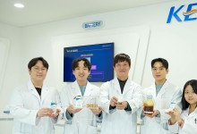

헤드라인 뉴스
LG U+, '스포키' 야구 콘텐츠 '시청→경험'으로 전환
LG유플러스의 스포츠 커뮤니티 플랫폼 '스포키'가 야구 관련 콘텐츠를 영상 시청 중심에서 이용자 경험·체험 중심으로 전환한다. 티빙의 KBO 프로야구 디지털 독점 중계 확정으로
파이낸셜뉴스

전고체전지 상용화에 한 걸음…단순 공정으로 고체전해질 대량생산
▲ 박준우(가운데) 박사팀 차세대 전지인 전고체전지용 고체전해질을 단순 공정으로 대량 생산하는 기술이 국내 연구진들에 의해 개발됐습니다. 한국전기연구원(KERI, 이하 전기연)은
SBS
KT, 세계 3대 디자인 어워드서 연이은 수상…"사용자 중심 디자인 도입"
KT(030200)가 세계적인 디자인어워드 시상식에서 연이어 수상하며 디자인 우수성을 인정받고 있다고 19일 밝혔다. 지난 1년간 KT는 '바이브런트 디자인 프로젝트'를 통해 '지니TV
뉴스1
네오위즈, ‘P의 거짓’ 글로벌 누적 이용자 700만명 돌파
네오위즈(공동대표 김승철, 배태근)는 ‘P의 거짓’이 출시 5개월 만에 글로벌 누적 이용자 수 700만 명을 달성했다고 19일 밝혔다. ‘P의 거짓’은 지난해 9월 글로벌 동시 출시됐다.
매일경제
SK텔레콤 직원 지난해 평균 연봉 1.5억…유영상 사장은?
유영상 SK텔레콤 사장의 지난해 연봉은 전년 대비 7200만원 줄어든 20억6500만원이었다. 이통3사 중 유일하게 영업이익을 끌어올렸지만, 통신시장 둔화 영향으로 상여를 다소 줄인
머니투데이